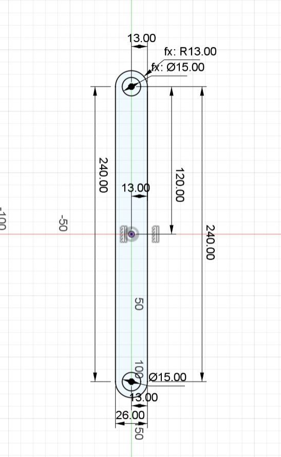
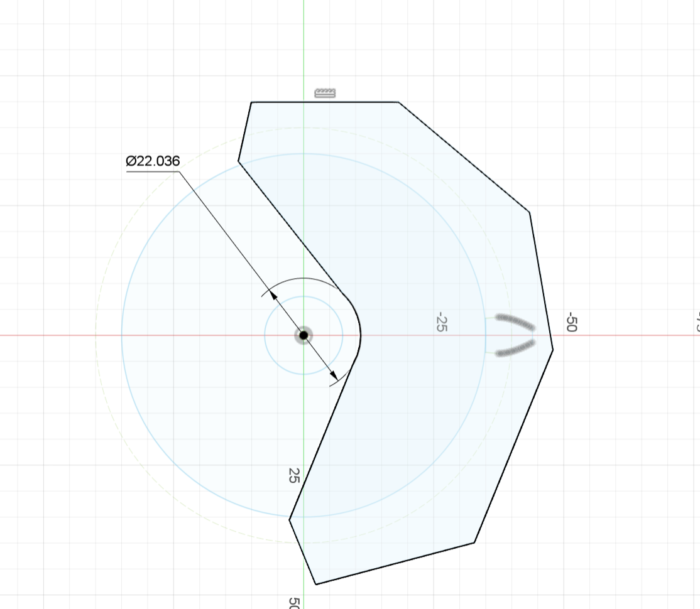
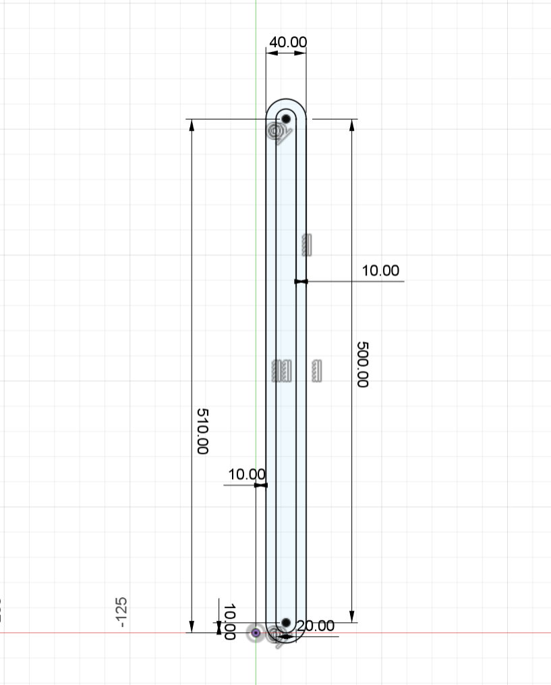
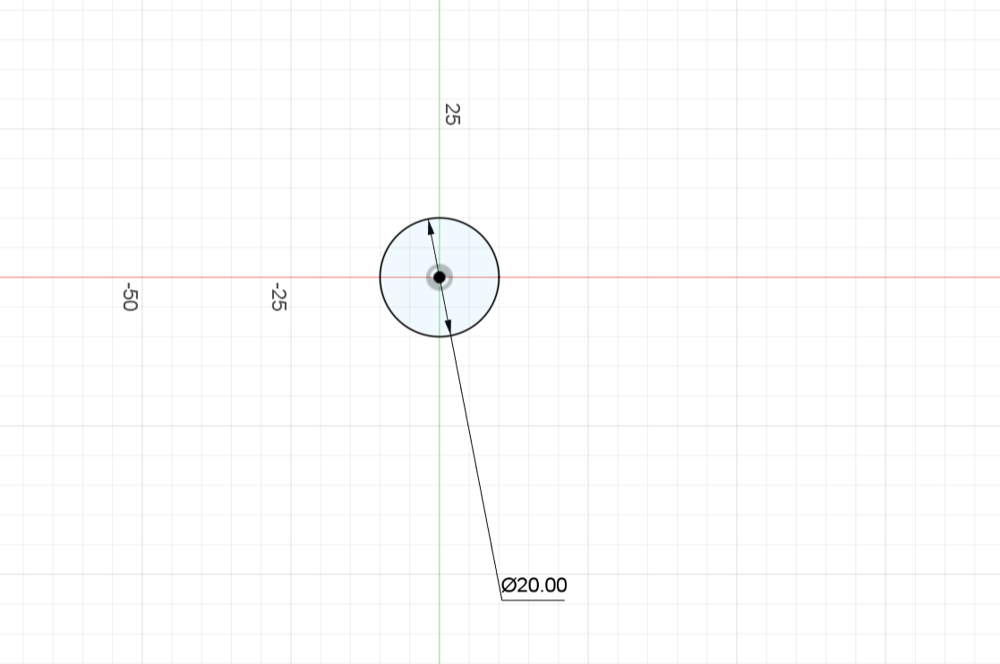
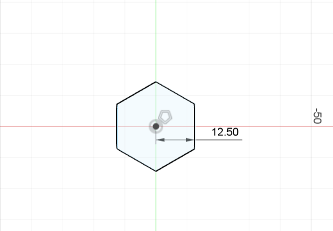

01 Build project and component
1-1:Build project:
Step1：Click the New Project button to create a new project.

Step2:Rename the project, click on the project folder, and start drawing components.
1-2：Build component
Step1:Right-click the component and select New Part.
Step2：Save the newly created component and rename the component name and storage location.
02 Design 3D model
a.Pedestal
a.1:Create
a.2:Modify
b.Pole
b.1:Create
b.2:Modify
c.Tenon 20
c.1:Create
c.2:Modify
d.Toothed gear
d.1:Create
GF Gear Generator is used to build the gear. For details, see 05 Ways to use plugins.
Concrete data：
d.2:Modify
e.Tenon 10
e.1:Create
e.2:Modify

f.Pillar
f.1:Create
f.2:Modify
g.Bolt
g.1:Create
g.2:Modify
h.Nut
h.1:Create
h.2:Modify
3.Constructure
The next part:
Rigid connection at the very bottom of the base, bolts, nuts and strut slots - ensure that the strut and base are securely
connected so that the project can move properly;
The rod and gear are rigidly connected, the tenon 20 is rigidly connected to the base, and the rod and tenon 20 are
rotation-ensuring that the gear can normally drive the rod to rotate without changing the position of the base;
The middle part:
Rotary connection of the two rods, rotary connection of the rod and tenon 10 - to ensure the normal movement of the project;
The previous part:
The base is rigidly connected to the bolt and nut, and the bolt and nut are sliding to the pillar - to ensure that the bolt
and nut can slide up and down the fixed line and drive the upper base together;
The rod and gear are rigidly connected, the tenon 20 is rigidly connected to the base, and the rod and tenon 20 are
rotation-ensuring that the gear can normally drive the rod to rotate without changing the position of the base;
03 Simple parameter
The rounded edges of tenon 10 and tenon 20 are fixed to d45-4mm and d47-0.2mm.
The round diameters of tenon 10 and tenon 20 are fixed to d80-20mm and d81-15mm.
04 Motion link

05 Ways to use plugins
1：Open Autodesk fusion and find the Fusion App Store in the add-on module.

2：Select GF Gear Generator from the Most Popular Apps.
This plugin is suitable for gear making in our project.

3:Find the version suitable for your computer and click to download it.
4:Check the two consent rules to download the next step.

5:Select the location you want to download to.

6:A page pops up by clicking the Install Now button in the middle.
7:This page indicates that the installation has been successful and
you need to click to view the documentation.
8:Go back to the main page and select scripts and add-ons in Add-ons.
9:Find GF Gear Generator and click Run.
10:If the icon is displayed on the main page, the installation is successful.

11.After clicking the icon, a series of data will appear on the right
side, and you can make the desired plug-in size, height, and number
of gears according to your needs.
12.This is a plug-in based on the data from the previous step.

06 Engineering Drawing
We select the engineering drawing of tenon 20.
07 Similar software introduction
RhinoRhino, is a professional 3D computer graphics software. It is particularly good at dealing with complex free-form surfaces,
and is widely used in industrial design, architectural design, ship design, jewelry design and other fields.
Rhino's core strength lies in its precise modeling capabilities, allowing users to create smooth and highly editable 3D
models. In addition, Rhino has a powerful plug-in architecture, such as Grasshopper, a visual programming language
environment that allows designers to explore more complex geometries through parametric design. All in all, Rhino is a
flexible, full-featured 3D modeling tool that is ideal for professionals who need high-precision modeling and design innovation.

08 Automated Modeling
1. After building the two parts, select the partition entity, the blue part is the entity to be divided, and the red part is
the segmentation tool. Then repeat the partition entity until the two parts entity parts are completely separated.
2. Select Automated Modeling from the upper toolbar
3. In automated modeling, the blue part is the face to be connected, and the red part is the face to be avoided. Select a new
entity and click Generate Shape
4. After about 1-2 minutes, 6 alternative schemes will be generated, and alternative 2 with better effect will be selected after
comparing the differences
5. Hide the entity 9 of automated modeling, select merge entity, and merge all the previously divided parts back
6. Final chamfering for final shape correction
7. Engineering Drawing